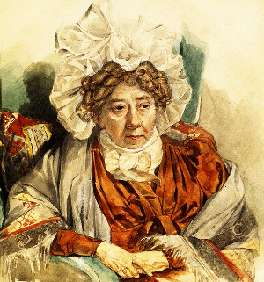

Борис Акунин
Мой календарь
31 марта 1837 года Наталья Кирилловна Загряжская, урожденная графиня Разумовская, по-видимому, узнала что хотела. В этот день девяностолетняя старушка, которую знал весь Петербург, с чувством глубокого удовлетворения отдала Господу свою душу, а что последовало далее, мы знаем. Наталья Кирилловна заранее рассказала.
«- Не хочу умереть скоропостижно, - говорила Загряжская. - Придешь на небо угорелая и впопыхах, а мне нужно сделать Господу Богу три вопроса: кто был Лжедмитрий, кто Железная маска, и шевалье д`Эон - мужчина или женщина? Говорят также, что Людовик XVII увезен из Тампля и его спасли; мне и об этом надо спросить».
Каждый вечер старуха устраивала карточную игру - очень любила перекинуться в бостон. Но 31 марта сеанс отменила, чтобы спокойно и без суеты умереть. Можно не сомневаться, что она «сделала» Господу Богу свои вопросы, и удовлетворила любопытство.
Сегодня время задуматься, а какие вопросы сделали бы Господу вы.